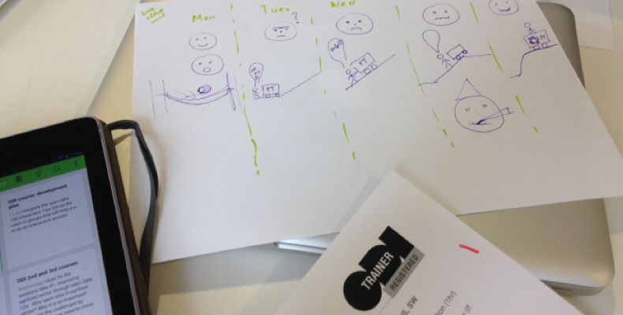
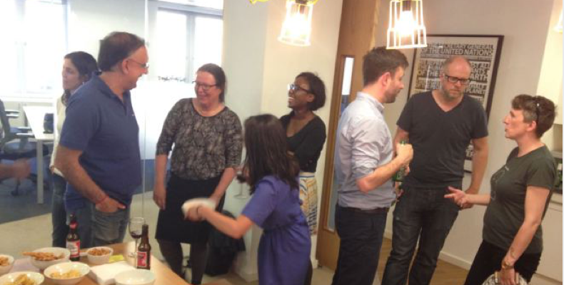
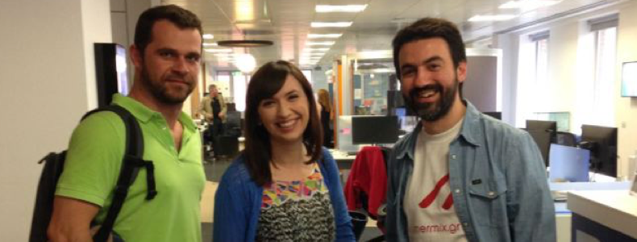

Guest post: Visualising my week on the ODI's Train the Trainer course
This is a visualisation of my week at the Train The Trainer course at the Open Data Institute (ODI). Let me explain it to you by describing what was a very interesting week.

We arrived on a Monday at the ODI office*, in excellent mood [smiley face on the diagram], eager to start the course. The atmosphere in the office is great and the ODI people are very kind and always willing to help.
We were relaxed, enjoying the introduction to the course by our trainers David and Mel. We sat back and started enjoying the first parts [hammock icon in my diagram]. As part of the first day we gave a micro-course of 5 mins. Mine was about the open data stakeholders’ ecosystem. Although the day seemed to be quite demanding I was thinking: we will make it.
On Tuesday we began on educational theory and I thought OMG, do we need to integrate all this new theory into our 20 min course for the end of the week? [Face with big open eyes on the diagram].
Our trainer for the day, Nancy Copley, emphasised how important is to define clear learning outcomes, how to adapt to the different learning styles of our trainees, how to conduct activities aligned to learning outcomes and how to move from surface learning to deep learning. I felt that my mind was overwhelmed by new ideas about how I should set up my 20 min assessment course and it was very clear now that the week will be demanding [icon of 1 ton van in my diagram].
After having dinner and a couple of beers with a colleague that works with open data for development, I started working on my 5 minutes session that I would deliver on Wednesday. I was trying to apply all the educational theory that we were taught.
Wednesday morning: I was stressed and I was feeling that I still had a long way to get to the point where all the things will be integrated and aligned. My 5 minutes were about improving the global food supply through open data. The main objective was to help participants understand how open data can improve the global food supply and which are the challenges of doing so.
My 5 minute presentation did not go well. I did not manage to conduct activities aligned to the learning outcomes and my learning outcomes were not very clear. I felt very disappointed [sad face icon on my diagram]. I had still very much work to do so I started to work using the comments of our trainers as a reference.
Thursday: the day of our 20 minute assessment course. It went quite well but I felt that there were parts that could be better e.g. the activities. After the end of the presentations [tired face icon in my diagram] the ODI team brought ice creams that were really needed to bring some smiles again on the room.
The day closed with cold drinks at ODI’s kitchen and some very interesting discussions with ODI members [party icon on my diagram].

On Friday we had to prepare our personal development plan based on the feedback that we received by other participants of the course and also our own self-assessment. With a good mood [smiley face icon on the diagram] and with the feeling that now the van has the engine that it needs to get up the high hill I worked on the plan.
In the afternoon, whilst our assessors did their final marking, Simon and Steffica delivered a session on how to organise a great open data course.
The big moment came right after with peer to peer review meetings with trainers. Although marginally, it was a pass. I felt great and really happy.
I would like once again to thank ODI members for the excellent organisation and hosting of the course as well as ODI Athens node for supporting our participation in the course. Special thanks to our trainers Melissa and David.

Before leaving we took some nice pictures with Fiona, a member of the ODI team with whom Agro-Know colleagues worked for the Discussion Paper on improving Agriculture and Nutrition with open data.
I'm eager to start transferring the knowledge to others and to try to change the mindset of the people about the open data.
*By the way, ODI's offices are really cool with a lot of special items such as dashboards with live data on the walls and a vending machine that releases packets of crisps every time that a news item related to recession is recognised in the BBC news feed.
Giannis Stoitsis is Partner and COO at Agro-Know (www.agroknow.gr), a SME which uses, creates, publishes and loves open data of the agrifood sector.
This blog first appeared on the Agro-Know's blog.